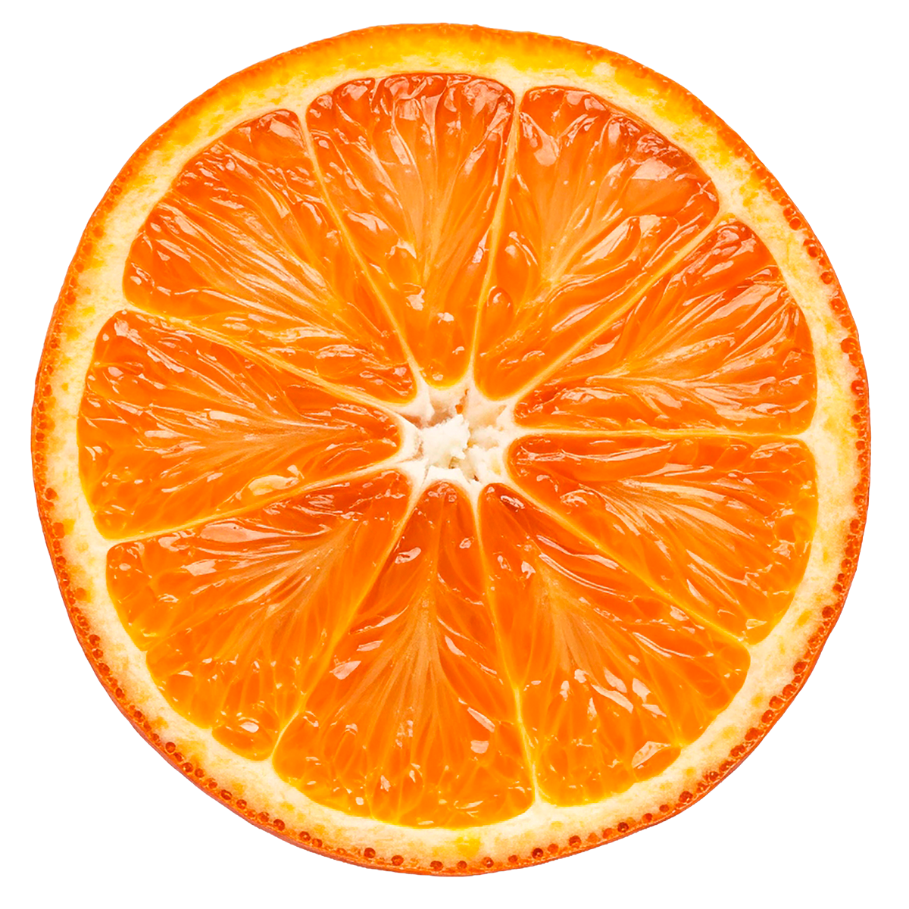
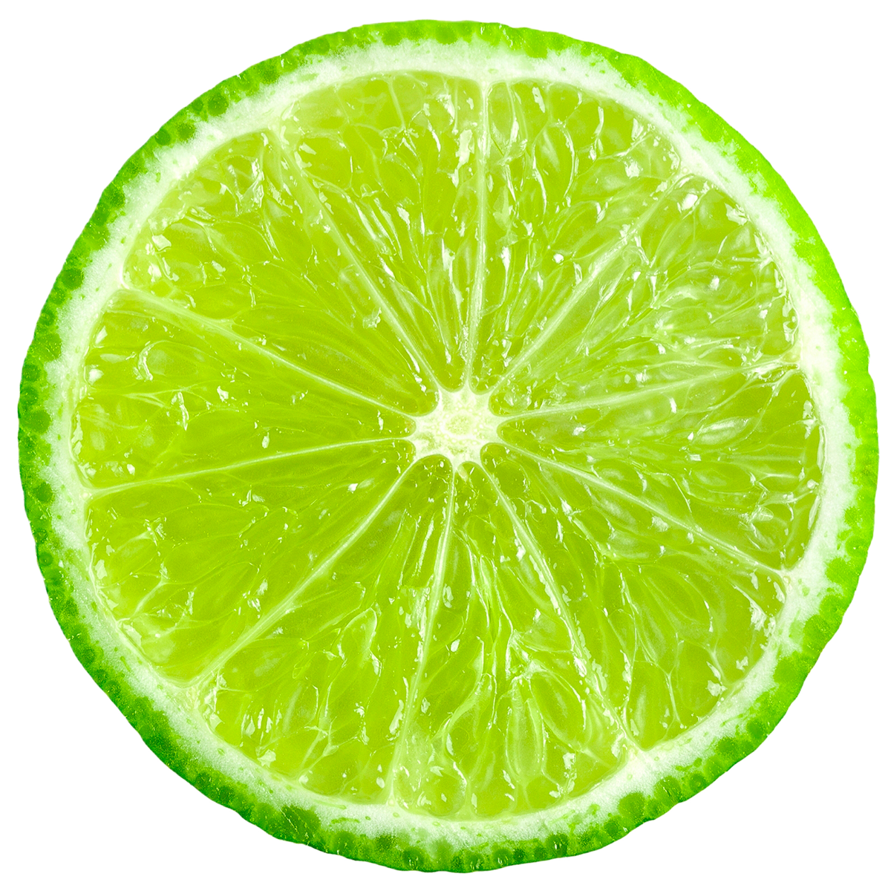
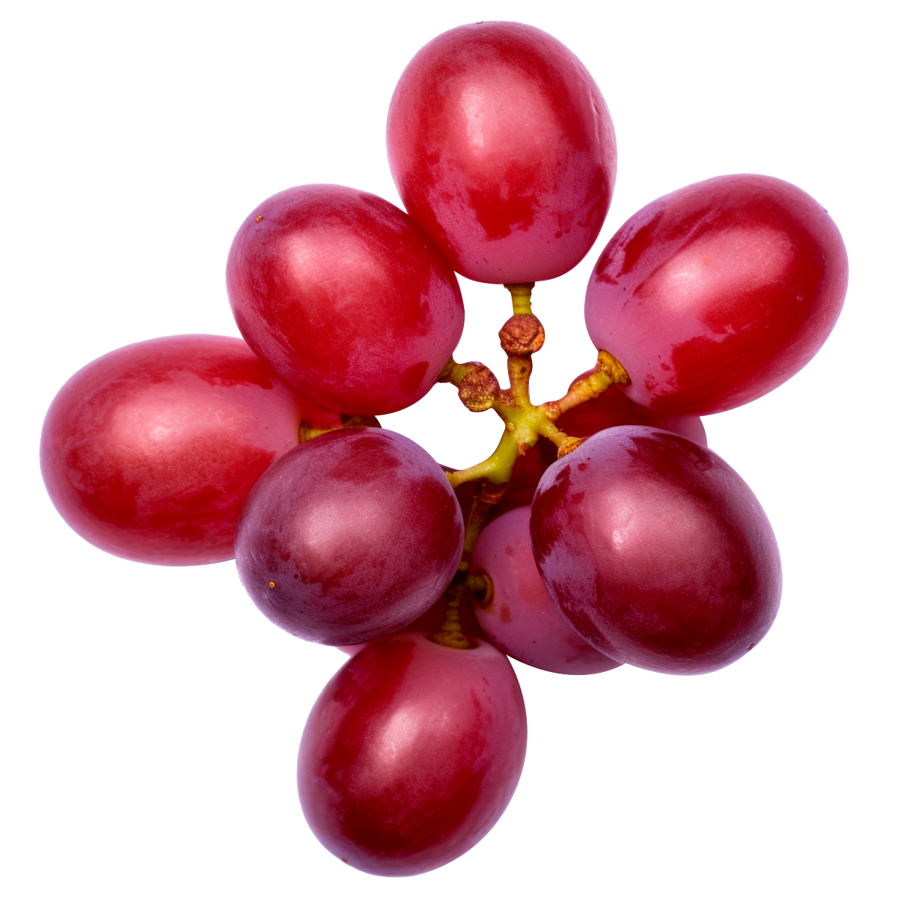

Una guía sensorial
Origen, historia y sabor de las frutas más icónicas del planeta.

La fruta del sol. Cultivada durante más de 4,000 años, la naranja es el cítrico más consumido en el mundo y símbolo de vitalidad, alegría y abundancia.
Origen
Sudeste Asiático · China, 2500 a.C.
Descubre más

Ácido, brillante, indomable. El limón conquista cada cocina del mundo con su intensidad única. Más que un fruto: un estado de ánimo.
Origen
Nordeste de India · Assam, s. I d.C.
Descubre más

La uva es el fruto más cultivado de la historia humana. Desde los viñedos de la antigua Mesopotamia hasta las bodegas de Burdeos, su historia es la historia de la civilización.
Origen
Cáucaso Sur · Georgia, 6000 a.C.
Descubre más
La naturaleza en cifras